Meddbase allows you to set up and manage meetings. Meetings can include multiple attendees, allow messaging and document sharing within Meddbase. They can also be held as online meetings*.
Click here for a detailed article on setting up an online meeting.
*To use the online video meetings feature in Meddbase, the chamber must have Telemedicine enabled. Please contact Support to arrange this.
This article outlines the process of creating and booking different meeting types* in your system, so that time spent in these meetings can easily be distinguished, e.g. Team Meeting, Daily Stand-up, 1-to-1 etc.
Categorising meetings also provides clarity for Meddbase users looking at schedules as to what types of meetings are being held.
*To enable the Meeting Types feature in your system, please contact Support.
This article describes
To define a new meeting type:-
To book a meeting in Meddbase:
*This option requires enabling and configuring the Video calls & Telemedicine integration. To enable this feature in your system, please contact Support.
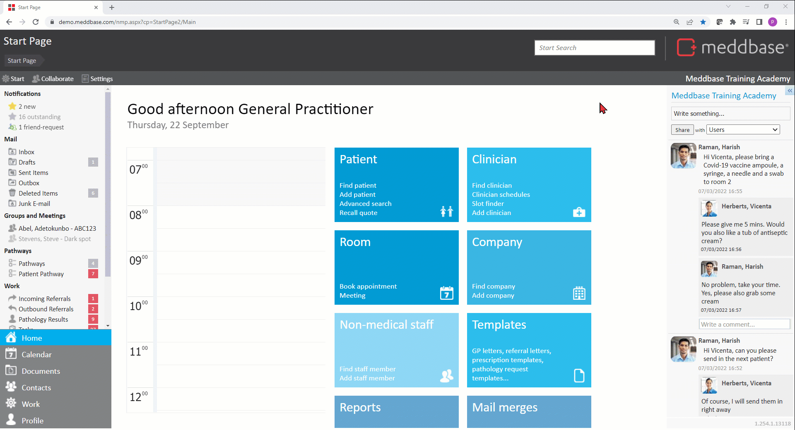
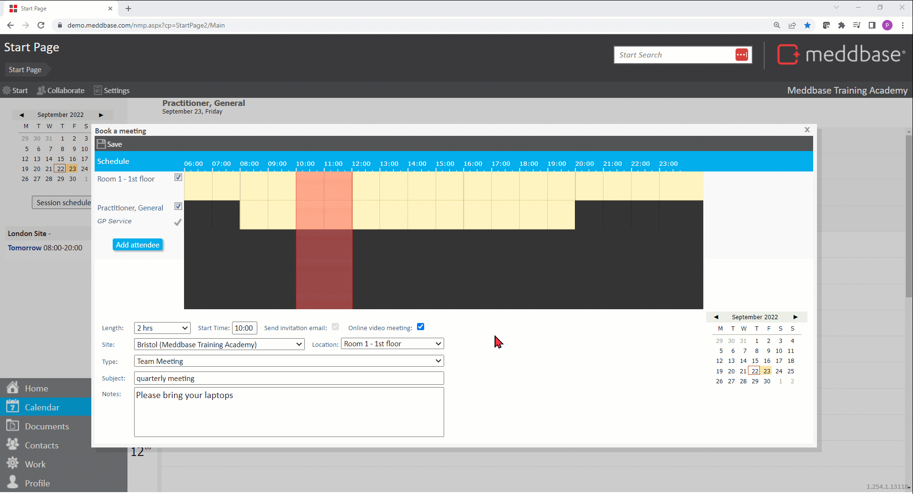
Once the meeting is booked all attendees who are Meddbase users will see and be able to interact with the meeting and in several places in the application:
1. On the timeline in the user's Calendar* - the meeting block displays basic information about the meeting:
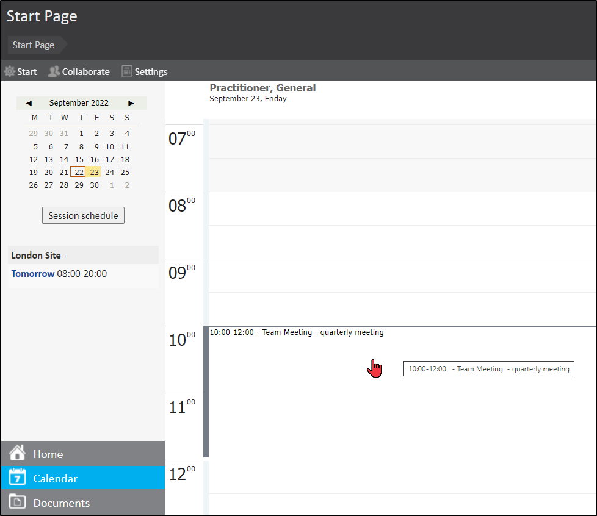
*If the Start Page Layout the respective user is assigned to (under Settings > Preferences > Default Start Page Layout) has the Show personal schedule option enabled, and the meeting is taking place today, it will be visible on the Start Page.
2. On the Side by Side Schedules view - the meeting block displaying basic information about the meeting visible on all attendee's timelines.
Side by Side Schedules view is available under:
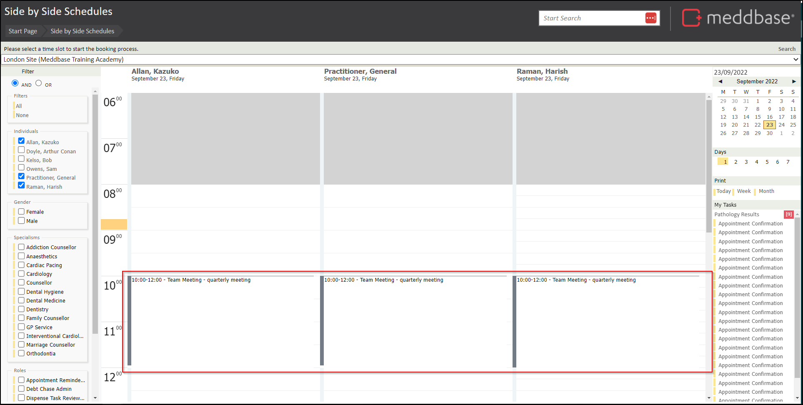
3. Once any action is taken in the meeting, e.g. a document is shared or a message posted in the Feed, the Meeting Subject will appear in the Groups and Meetings section on the Start Page for all attendees.
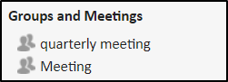
All meeting attendees receive an invitation email with the meeting details*, including:
*A Join meeting link will be present in Online meeting invitation emails. Click here for a detailed article on online meetings
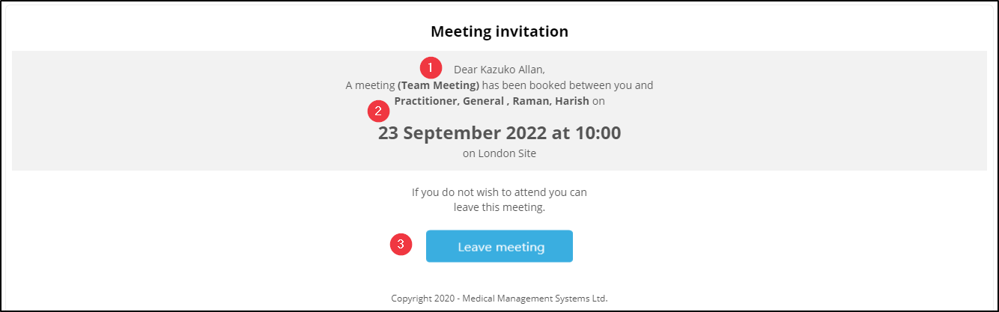
Furthermore:
Once logged in to Meddbase a user can join a Meeting they created or have been invited to by:
1. Navigating to Calendar and clicking the meeting block on the timeline
2. Clicking the meeting block on the timeline front and centre on the Start Page.
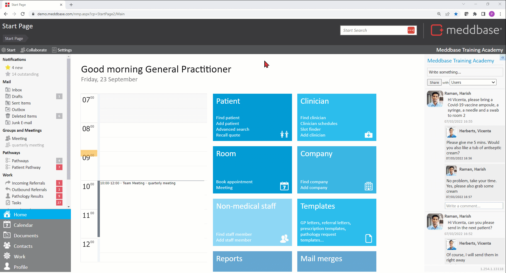
Meeting options
Once in the Meeting dialog window, an attendee has a view of a host of information and many options available:
1. Detail for this meeting is displayed and shows:
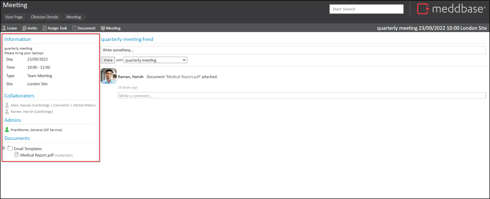
2. Invite - Attendees set as Admins for the meeting can use the Invite button to search for and invite further attendees
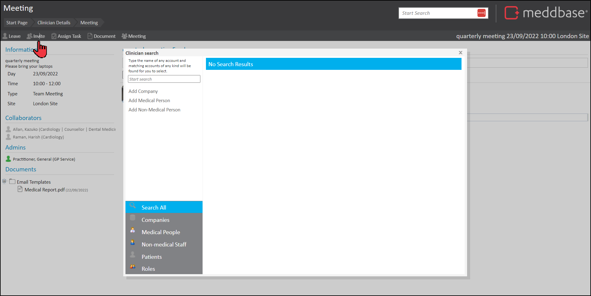
3. Assign Task - each attendee who is a Meddbase user can use the Assign Task button to assign tasks to other Meddbase users or groups of users.
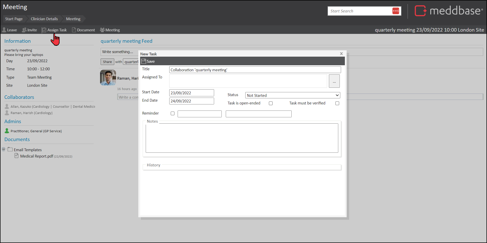
4. Add and create Documents - each attendee who is a Meddbase user can select the Documents button and choose an option from the menu to create or attach documents to the meeting.
When added the document appears in the Documents list and a message is added to the Feed.
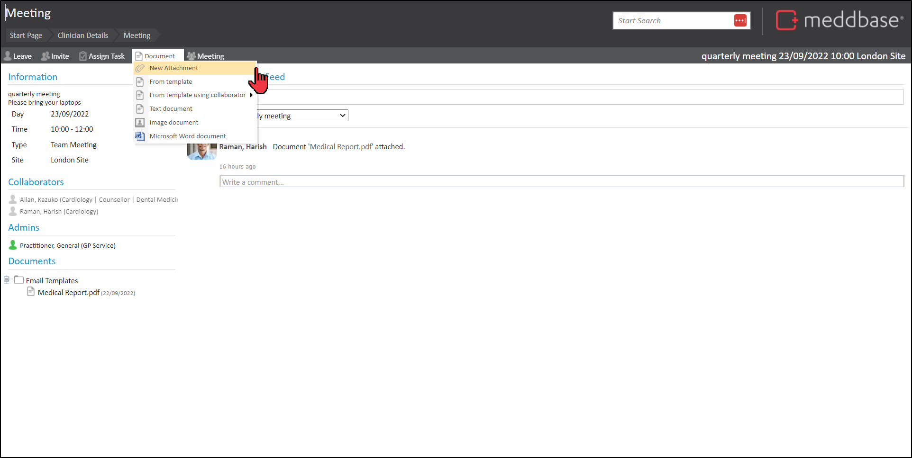
5. Meeting settings -attendees set as Admins for the meeting can access and manage the meeting settings:
| Action | What it does |
Modify | Re-opens the Book a meeting dialog and enables you to adjust the date, time, duration, Site/Location and Subject of the meeting. |
| Cancel | Enables you to completely cancel the meeting. |
| Members | Enables you to remove an attendee or make an attendee an Admin for the meeting. |
| Activity | Displays the activity log for the meeting. |
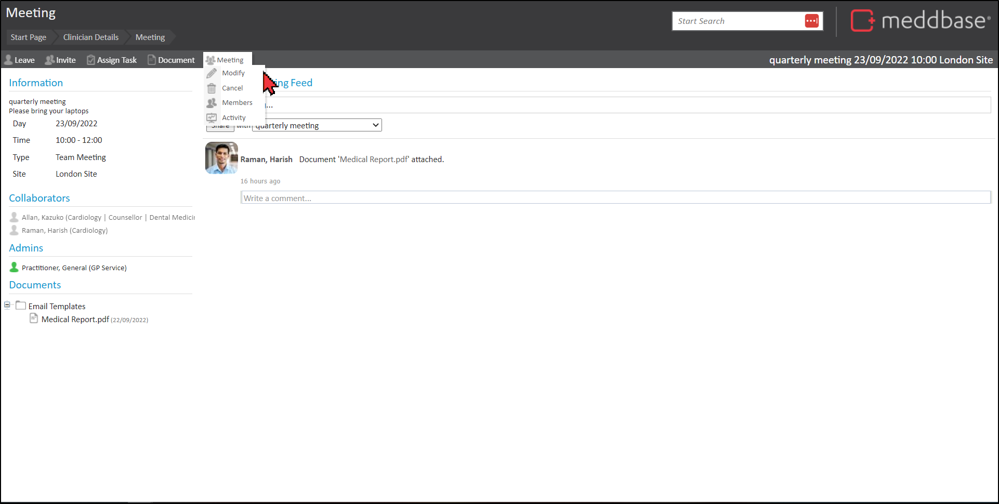